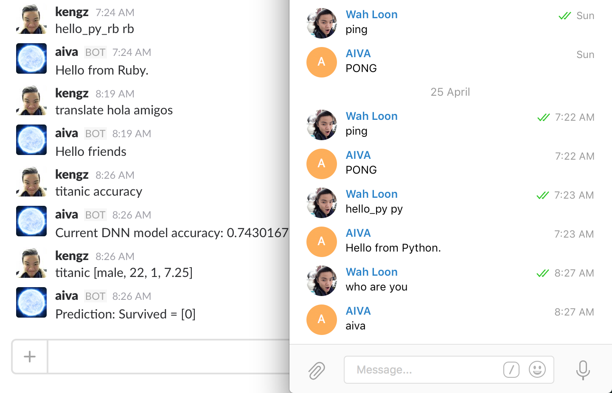
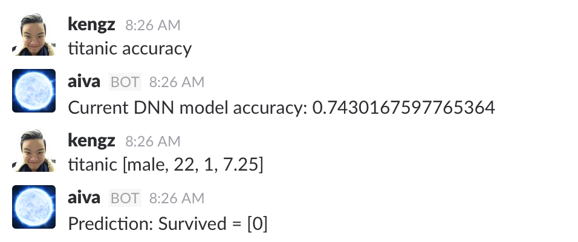
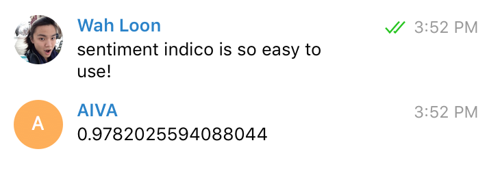
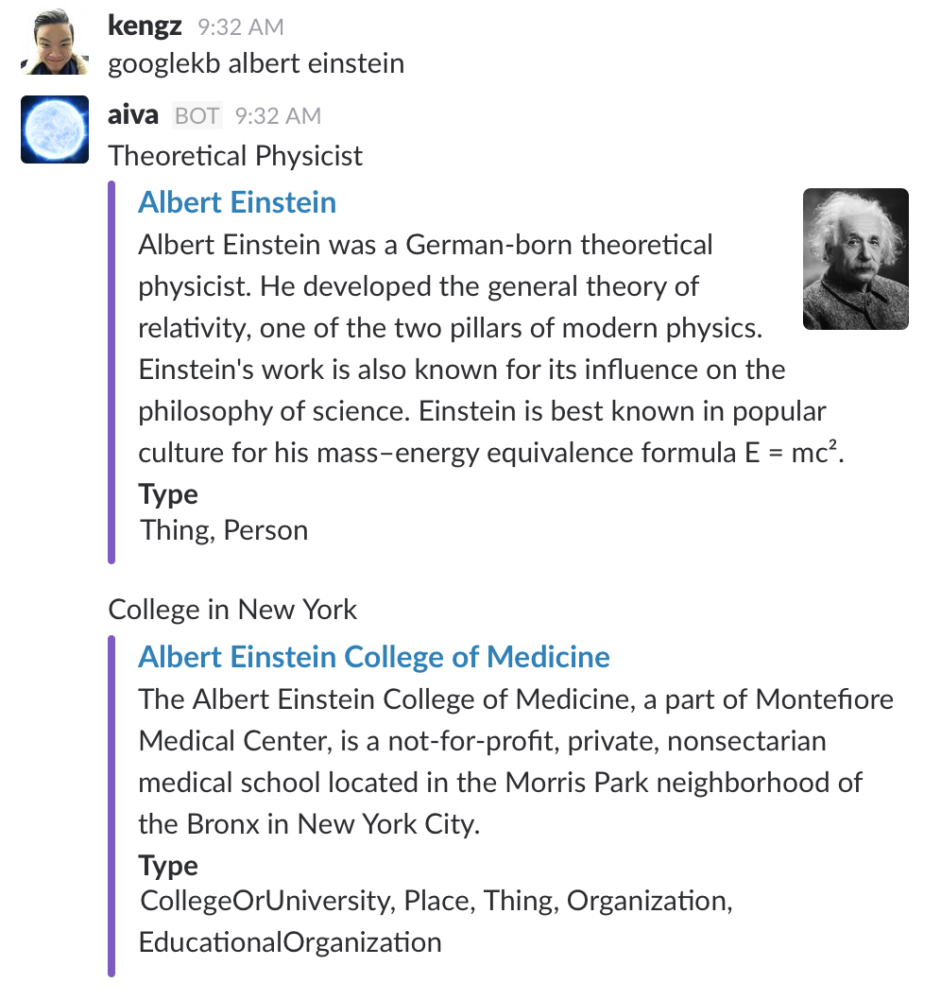
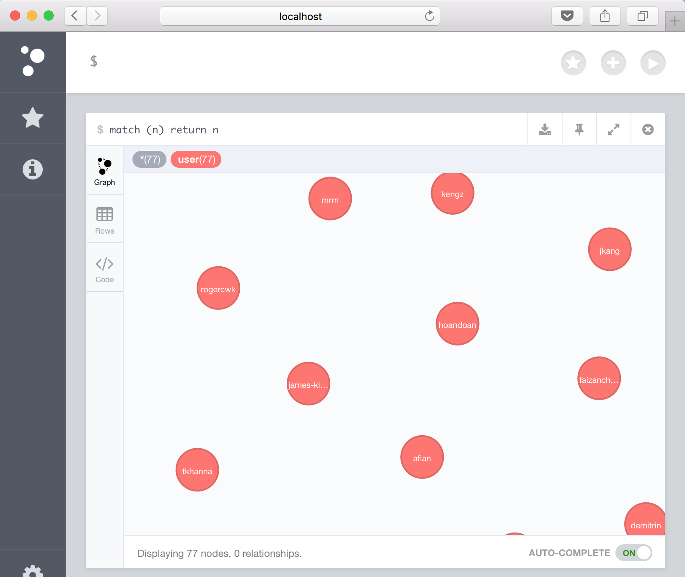
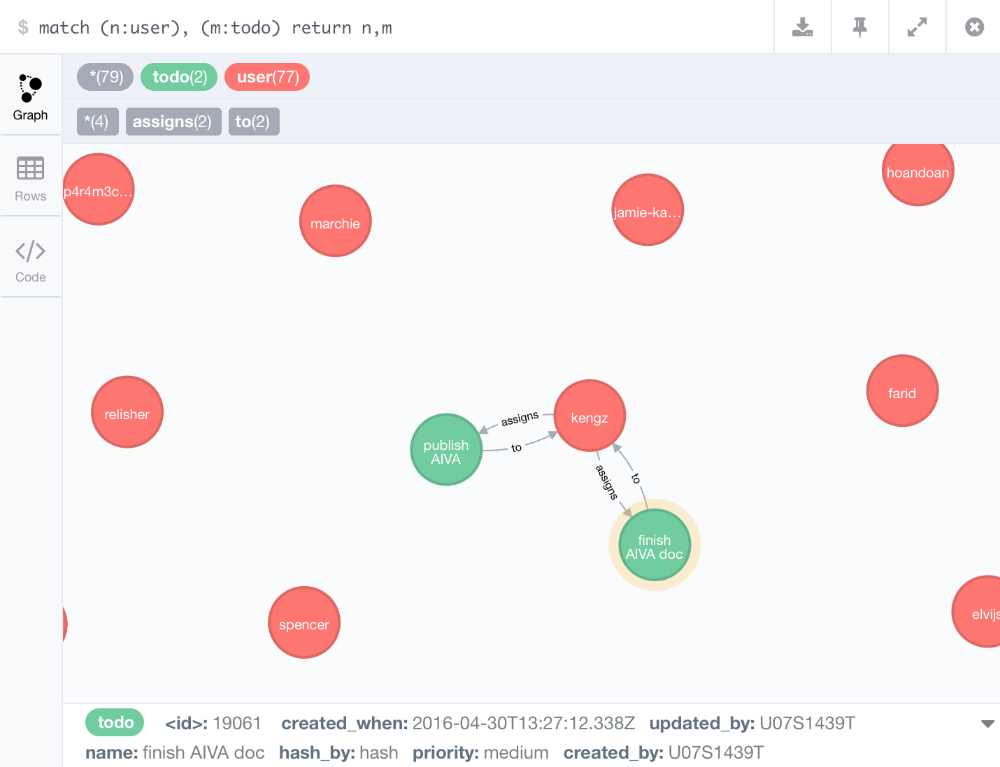
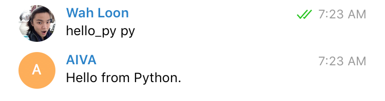
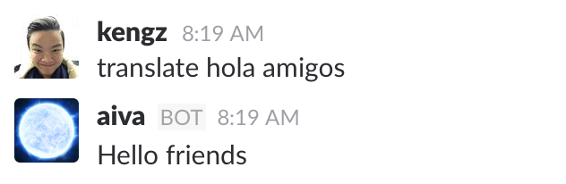

AIVA 


AIVA (A.I. Virtual Assistant): General-purpose virtual assistant for developers.
It is a bot-generalization: you can implement any features, use with major AI tools, deploy across platforms, and code in multiple languages.
| AIVA is | Details |
|---|---|
| general-purpose | An app interface, AI assistant, anything! |
| cross-platform | Deploy simultaneously on Slack, Telegram, Facebook, or any hubot adapters |
| multi-language | Code in and coordinate among Node.js, Python, Ruby, etc. |
| built-in with AI tools | Tensorflow, SkFlow, Scikit, Pandas, Indico.ml, spaCy, Watson, Google APIs |
| hackable | It extends Hubot. Add your own modules! |
| powerful, easy to use | Check out setup and features |
To see what they mean, say you have a todo-list feature for AIVA, written in Node.js and leverages NLP and ML from Python. Set your todo list earlier from Slack on desktop? You can access it from Telegram or Facebook on mobile.
We see people spending a lot of time building bots instead of focusing on what they want to do. It still requires much effort to just get a bot up and running. Moreover, the bot built is often confined to a single language, single platform, and without AI capabilities.
Why restrict when you can have all of it? Why build multiple bots when you can have one that plugs into all platforms and runs all languages?
AIVA exists to help with that - we do the heavy-lifting and build a ready-to-use bot; it is general purpose, multi-language, cross-platform, with robust design and tests, to suite your needs.
AIVA gives you powerful bot tools, saves you the time to build from scratch, and allows you to focus on what you want to do. Morever, you can build once, run everywhere with AIVA’s multi-adapter (Slack, Telegram, Fb).
Installation
1. Fork this repo so you can pull the new releases later:
2. Clone your forked repository:
git clone https://github.com/YOURUSERNAME/aiva.git
Setup, Run
You can run AIVA on your local machine or a Ubuntu server - Digital Ocean recommended. See Docker installation if you’re new to it, or the alternate setups.
- dependencies: Pull the AIVA Docker image:
docker pull kengz/aiva
- setup keys: update
.env,bin/.key-aiva(production),bin/.key-aivadev(development).
Run
- run:
npm start # runs aivadev
See Commands for more. This will start AIVA with the default hubot adapters: Slack, Telegram, Facebook. See Adapters for connecting to different chat platforms.
AIVA saying hi, translating, running deep neural net; on Slack, Telegram, Facebook: 
Check Setup tips for help.
Features
This gives a top level overview of the features. See Modules to find usable functions for developers.
| Feature | Implemented? |
|---|---|
| fast setup | yes |
| docker | yes |
| cross-platform | implementing |
| customMessage | pending |
| graph brain | improving |
| multi-language | yes |
| built-in AI tools | yes |
| theoretical power | yes |
fast setup
3 steps to get a bot installed and running. It once took me just 15 seconds to deploy a bot for an unexpected demo.
P/S “fast” implies the least number of steps; dependency installation can be heavy and long.
Docker
Complex projects tend to be difficult to install and distribute. Docker has become a preferred solution, especially for heavy machine learning projects. Docker also provides a fast and safe development environment through containerization.
docker pull kengz/aiva
AIVA is quite heavy on dependencies, understandably. So we’ve add an AIVA docker image kengz/aiva since v3.2.0, and development is seamless with it. See Docker installation.
cross-platform
The Facebook bot paradigm is “why use multiple apps when you can access them from one bot?”. We dare to ask “why talk to the bot from one platform instead of everywhere?” With AIVA we can build once, run everywhere.
Omnipresence
This inspires the omnipresence feature: a bot that recognizes who you are, and can continue conversation in any supported platforms. We talk to our friends everywhere, and they don’t forget us when we switch apps. Bots should do the same too.
In short: one brain, multiple interfaces. AIVA’s hubot base allows for generality, and it can tap into multiple platforms by using different adapters. Unlike the original hubot though, she can exist simultaneously on multiple platforms by having several interface instances plugged into the respective adapters, and all share the same brain, which serves as the central memory.
See adapters for more.
customMessage
Sending plain texts to different adapters is straightforward. However, sometimes we wish to take advantage of the available custom formatting of a platform, such as Slack attachment or Facebook rich messages.
These special messages can be sent via robot.adapter.customMessage(attachments) - a method that most adapters implement (Slack, Telegram, Facebook adapters have it). All we need to do is to format the attachments properly by detecting the current adapter using robot.adapterName, then format the attachments to the right format with customFormat.
See adapters for more.
graph brain
The brain of AIVA is a graph database; it is the central memory that coordinates with different adapters, allowing it to be consistent across the platforms; for example, it can remember who you are or your todo list, even as you switch apps.
Graph is a very generic and natural way of encoding information, especially for information that doesn’t always follow a fixed schema. A knowledge base is often implemented as a graph (wordNet, conceptNet, google graph, facebook graph, etc.) due to the adhoc and connected nature of generic knowledge. Thus, we think it’s the natural choice for AIVA.
Although graph and non-graph databases can both be Turing-complete, graphs tend to have a lower working complexity in practice, and it’s data units can be schema-free. Turing completeness ensures that the database can do everything a computer supposedly can; lower complexity makes development easier, schema-free allows knowledge creation on-the-fly.
AIVA uses neo4jKB as the brain - a knowledge base implemented graph with neo4j. Specifically, neo4jKB imposes a KB standard on the graph for proper usage as a knowledge base.
multi-language
Unite we stand. When different languages work together, we can access a much larger set of development tools. Also, we wish that a developer can use the AIVA regardless of his/her favorite programming language.
For more, see Polyglot environment and Socket.io clients for how it’s done. We now support node.js, python, ruby.
built-in AI tools
AIVA comes with a set of well-rounded set AI/machine learning tools - each is the most advanced of its type. We have packaged these tools nicely, so you can get right into work with them. This saves you the tideous hunt, installation, and setup.
lib/<lang>/ais/ contains the specific implementations of the AI modules/models, and lib/<lang>/ai.<lang> is the high-level script that imports the functions from lib/<lang>/ais/ for usage.
Thanks to the multi-language feature, we can easily access the machine learning universe of Python. For example, lib/py/ais/ contains a sample Tensorflow training script dnn_titanic_train.py, and a script to deploy that DNN for usage dnn_titanic_deploy.py. It is interfaced through scripts/dnn_titanic.js that allows you to use run predictions.
The list of AI modules and their respective language:
| AI/ML | type | lang |
|---|---|---|
| Tensorflow | Neural Nets | Python |
| scikit-learn | Generic ML algorithms | Python |
| SkFlow | Tensorflow + Scikit-learn | Python |
| spaCy | NLP | Python |
| Wit.ai | NLP for developers | Node.js client |
| Indico.io | text+image analysis | (REST API) Node.js client |
| IBM Watson | cognitive computing | Node.js client |
| Google API | multiple | Node.js client |
| ConceptNet | semantic network | (REST API) Node.js interface |
| NodeNatural | NLP | Node.js |
| wordpos | WordNet POS | Node.js |
| date.js | time-parsing | Node.js |
These tools are put close together in a polyglot environment, so you can start combining them in brand new ways. An example is the generic NLP parser lib/js/gen_nlp.js for parsing user input into intent and functional arguments - it uses date.js and spaCy.
For more in-depth details, see modules. Also if find a great ML tool we should include, submit a Pull Request!
theoretical power
AIVA is based on a theoretical interface HTMI and a brain CGKB that is human-bounded Turing complete. The theorem establishes that HTMI can be used by a human to solve any problems or perform any functions she enumerates that are solvable by a Turing Machine. Complete implementation is still underway.
Why is this important? Because for far too many times people have tried to solve problems that are unsolvable. Many of the bots out there are actually very restrictive. To allow developers to solve problems with full power, and with easy, we have built a general-purpose tool and made it theoretically complete, so you can focus on solving your problem.
AI Modules
AIVA comes with a set of well-rounded set AI/machine learning tools - each is the most advanced of its type. You can use the as needed, directly from within AIVA without extra installations. This section gives a quick overview of their uses, and some useful helper modules.
| Module | Implemented? |
|---|---|
| general NLP | yes |
| Wit.ai | yes |
| TensorFlow | yes |
| SkFlow | yes |
| Indico.io | yes |
| Knowledge base | yes |
| neo4jKB brain | minimal |
| Google APIs | yes |
| IBM Watson | yes |
general NLP
// js: scripts/hello_ai.js
var genNLP = require('../lib/js/gen_nlp')
var client = require('../lib/client.js')
global.gPass = client.gPass
var input = 'find me flights from New York to London at 9pm tomorrow.'
genNLP.parse(input)
.then(function(reply) {
console.log(JSON.stringify(reply))
})
NLP is core to a human-machine interactions. We provide one of the fastest and most advanced NLP module in lib/js/gen_nlp for generic usage. It serves as a convenient method to get all the vital NLP results. This is especially useful in the js interface scripts for parsing user inputs, normalizing texts, and extracting information.
A large part of it is powered by spaCy, which is “the fastest syntactic parser in the world and that its accuracy is within 1% of the best available”. The time parser uses date. Together, gen_nlp extracts a rich and accurate set of results for connecting natural language input to your modules.
Next we show an example of how a flight finder can benefit from it. For instance, it can get the NER or noun_phrases for the locations, time, person; the time for a normalized form of ISO time string; NER_POS_TREE to understand the dependencies, e.g. what’s the origin and target destinations.
The example in
scripts/hello_ai.jsshows how the generic NLP module inlib/js/gen_nlp.jsreturns the result pulled from spaCy in Python, and Date.js in Node.js.
// the result from genNLP.parse(input)
result = {
"len": 13,
"pos_fine": [
["find", "VB"],
["me", "PRP"],
["flights", "NNS"],
["from", "IN"],
["New", "NNP"],
["York", "NNP"],
["to", "IN"],
["London", "NNP"],
["at", "IN"],
["9", "CD"],
["pm", "NN"],
["tomorrow", "NN"],
[".", "."]
],
"NER": [
["New York", "GPE"],
["London", "GPE"],
["9pm", "TIME"]
],
"lemmas": ["find", "me", "flight", "from", "new", "york", "to", "london", "at", "9", "pm", "tomorrow", "."],
"tokens": ["find", "me", "flights", "from", "New", "York", "to", "London", "at", "9", "pm", "tomorrow", "."],
"pos_coarse": [
["find", "VERB"],
["me", "NOUN"],
["flights", "NOUN"],
["from", "ADP"],
["New", "NOUN"],
["York", "NOUN"],
["to", "ADP"],
["London", "NOUN"],
["at", "ADP"],
["9", "NUM"],
["pm", "NOUN"],
["tomorrow", "NOUN"],
[".", "PUNCT"]
],
"NER_POS_tag": [
["find", "VERB"],
["me", "NOUN"],
["flights", "NOUN"],
["from", "ADP"],
["New York", "GPE"],
["to", "ADP"],
["London", "GPE"],
["at", "ADP"],
["9pm", "TIME"],
["tomorrow", "NOUN"],
[".", "PUNCT"]
],
"NER_POS_tree": [{
"find": {
"children": [{
"flights": {
"children": [{
"me": {
"children": [],
"edge": "nsubj",
"tag": "NOUN"
}
}, {
"from": {
"children": [{
"New York": {
"children": [],
"edge": "pobj",
"tag": "GPE"
}
}],
"edge": "prep",
"tag": "ADP"
}
}, {
"to": {
"children": [{
"London": {
"children": [],
"edge": "pobj",
"tag": "GPE"
}
}],
"edge": "prep",
"tag": "ADP"
}
}, {
"at": {
"children": [{
"9pm": {
"children": [],
"edge": "pobj",
"tag": "TIME"
}
}],
"edge": "prep",
"tag": "ADP"
}
}, {
"tomorrow": {
"children": [],
"edge": "npadvmod",
"tag": "NOUN"
}
}],
"edge": "ccomp",
"tag": "NOUN"
}
}, {
".": {
"children": [],
"edge": "punct",
"tag": "PUNCT"
}
}],
"edge": "ROOT",
"tag": "VERB"
}
}],
"noun_phrases": ["me", "New York", "London", "9pm"],
"text": "find me flights from New York to London at 9 pm tomorrow .",
"time": "2016-04-24T01:00:00.042Z"
}
The extracted NLP properties are listed below. For more details, refer to the links.
| NLP property | Reference |
|---|---|
| text | The original input text. |
| len | Length: number of tokens in text. |
| tokens | Text broken into array of tokens. |
| lemmas | The base form of each token. |
| NER | Named Entity Recognition |
| noun_phrases | grouping of meaningful nouns |
| pos_coarse | Coarse Part-of-speech tagging. |
| pos_fine | Finer Part-of-speech tagging. |
| NER_POS_tree | The syntactic and dependency parse tree of text, seen in DisplaCy |
| NER_POS_tag | The flatten array of NER_POS_tree, without the dependencies. |
| time | Parsed time if any, as ISO time string. |
Wit.ai
Wit.ai is pretty sick, with a bot engine powered by AI. They are now part of Facebook, if you don’t already know, and it’s free to use.
AIVA is fully compatible with Wit.ai, and we use its Node.js client. Bear in mind that you need to manually train it for each human input you wish to parse, or you can find some existing trained models. Their own guide is pretty comprehensive, so we won’t discuss much here.
# install to use wit.ai
npm i --save node-wit
Then add the token to bin/.keys-aiva and bin/.keys-aivadev; it will be set automatically.
WIT_TOKEN=<your_wit_token>
TensorFlow
TensorFlow is used mainly to build neural networks. There is a lot of comprehensive tutorials for it, so instead we will introduce you to the fastest TensorFlow interface: SkFlow.
SkFlow makes it very easy to use TensorFlow, and insanely fast to build a model. It comes with many useful wrapped methods and models. Check out this demo post written by the team, their tutorials, and examples.
We show how you can deploy a neural net with AIVA, with a sample Deep Neural Network trained on the Titanic data.
The TensorFlow (and other) AI models shall be grouped under lib/py/ais/. The top level lib/py/ai.py script will import from this folder for usage via Socket.io.
The Titanic DNN model can be trained using TensorFlow under
lib/py/ais/dnn_titanic_train.pyafter you uncomment and run it. It draws data from the sibling folderlib/py/ais/data/, and the model is saved to lib/py/ais/models/.For deployment,
lib/py/ai.pyimports and exposes the methods in lib/py/ais/dnn_titanic_deploy.py. They can then be used to do predictions from the interface scripts/dnn_titanic.js.TensorFlow Titanic DNN on Slack: 
This demonstrates another AI component of AIVA; not only AI can power the bot, the bot can serve as an interface to specific AIs too. Feel free to explore the examples in AIVA and the resources given earlier. Doing AI is much easier today!
| file/folder | details |
|---|---|
| lib/py/ais/dnn_titanic_train.py | Train and save the Titanic DNN model. |
| lib/py/ais/data/ | Folder for training and test data. |
| lib/py/ais/models/ | Folder for the saved model for deployment. Will be created when new model is trained. |
| lib/py/ais/ai_lib/ | Library with helpers for the AI folder. |
| lib/py/ais/dnn_titanic_deploy.py | Deploy the DNN titatnic model. |
| scripts/dnn_titanic.js | Interface script for the deployed model. |
Yes, you did just train a Deep Neural Network and deploy it on Slack for use. The mythical creative of deep learning - now at your fingertips - is going to help you unleash a whole new world of possibilities. And that’s not all; remember, there is an entire package of every major type of machine learning tools, all included in AIVA. Next, we will go over them quickly, and leave you to explore them more deeply.
See SkFlow for their tutorials and documentation.
SkFlow Modules
SkFlow is under TensorFlow. Besides, SkFlow also comes with:
both of which are very popular Python machine learning libraries for techniques that complement the neural nets. SkFlow is designed to be used with all three of them: TensorFlow, scikit and pandas.
Indico.io
Indico.io is the go-to machine learning API for developers. It focuses on the most applicable and useful ML tools for text and image analysis. This complements the custom-trained models of TensorFlow, and is useful especially when your use case can readily be solved by standard ML models.
The indico wrapper is grouped under the
aimodule. Remember to save your API key into the.keys-before using. A simple example can be found atscripts/hello_ai.js.
// js: scripts/hello_ai.js
var ai = require('../lib/js/ai')
ai.indico.sentiment(['indico is so easy to use!', 'Still really easy, yiss'])
.then(console.log)
// [ 0.9782025594088044, 0.9895808115135271 ]
We also add an interface script
below that, and demo it on Telegram. Of course the real application is likely backend oriented, such as gauging the quality of your customer service by analyzing their sentiment in chat.Indico on Telegram: 
With Indico.io, everything is done via its REST API or their wrapper clients - no model/training is needed. AIVA includes the Node.js Indico.io wrapper, nested under the lib/js/ai.js.
In fact, Indico is currently state of the art in sentiment analysis. All their APIs are very powerful and easy to use; they even explain the ML models employed for each, and the real-world use cases of each.
Read their docs, see what they offer, and get your API key here. You can get 10k free calls per month, which is sufficient for personal/small team usage.
Knowledge base
Sometimes we need a bot to have general knowledge, such as what a phone is, as well as local knowledge, such as user preferences. This can aid with its functions, and allow for autoplanning.
Autoplanning is vital for a bot to be able to function on its own without being explicitly told about every small detail of a task. Take the example input “call my wife”. It’s true that we can hard-code the logic to find who “wife” is for a given person, get “wife”’s number, and execute the dial function with it as the argument. What about plenty of other tasks? We can’t possibly hand-code each one.
Here’s a slightly different approach: for every function we allow the bot to do, we only define the function and its needed arguments. For calling a number it’d be function = dial, args = [number]. With a knowledge base and autoplanning, the input “call my wife” will be parsed into function = dial, args = [number]. Since it’s only given a person, it can use the knowledge base to trace the connection person -[has]-> number, and proceed to retrieve the needed information from memory. The bot can use its own knowledge to plan and execute the function autonomously.
This is a pretty advanced feature that’s still being implemented for AIVA. It is based on the theoretical proofs and outlines for a generic interface HTMI and a brain CGKB.
AIVA comes with 3 knowledge bases, from generic to local:
For now you can use Google Knowledge Graph directly to query knowledge. Note this is distinct from normal Google search: 
Neo4jKB brain
We discussed the graph brain above, known as neo4jKB, implemented in neo4j. It has a defined KB standard on the graph for proper usage as a knowledge base.
This serves as the local knowledge and the central memory system. It is the reason AIVA can behave as one consistent entity across different chat platforms. All of the memory-dependent tasks shall be read from and write to the brain.
AIVA uses the brain for user serialization, standardized in lib/js/user.js and called automatically on start from scripts/serialize_users.js. It will match up the multiple identities of a same user from different platforms. You can see all the serialized user nodes on neo4j’s browser interface at http://localhost:7474/ if you are running locally, or use SSH forwarding described here.
The serialized users in AIVA’s neo4jKB graph brain: 
The todo list feature is another relevant example. The todo items are connected to their owner. The module logic for neo4jKB is defined in lib/js/todo.js.
The todos belonging to a user as connected unit of information, in AIVA’s neo4jKB graph brain: 
These two examples show briefly how to use neo4jKB for AIVA’s modules, to help you get started. On our roadmap, we plan to complete the auto-parsing NLP module that automatically canonicalize knowledge from user input, so you don’t have to write the define the knowledge yourself. This is closely related to the autoplanning of the knowledge base feature, and is part of HTMI and a brain CGKB.
See neo4jKB for documentation.
Google APIs
Google APIs are grouped under the ai module because many of them are actually AI or powered by AI. lib/js/ais/google.js imports the Google APIs Node.js client. Not all of the APIs are initialized, you’d have to activate each one as you wish to use on Google API Manager and in lib/js/ais/google.js.
We have seen Knowledge Graph Search earlier; Google Search actually uses a npm module google powered by a scraper, so it is free without quota. The interface script is at scripts/google.js. Google Translate and language detection are also based on a scraper, in lib/py/ais/ai_lib/translate.py and is free without quota as well. The interface script is at scripts/translate.js.
See google API Nodejs client for their documentation.
IBM Watson
IBM Watson is a collection of cognitive computing tools. AIVA’s ai module includes the IBM Watson Node.js client at lib/js/ais/watson.js.
To use Watson, you need to register at IBM Watson Bluemix, activate the API you want, and get the individual credentials <username>:<password>. Note that the credentials are distinct for each API you activate.
Then, add the credentials in bin/.keys-aiva and bin/.keys-aivadev with the format WATSON_<API-NAME>_CRED=<username>:<password>, for example WATSON_PERSONALITY_INSIGHTS_CRED=<username>:<password> for Personality Insights. The lib/js/ais/watson.js module will automatically read the environment variable and activate the function for your usage.
See the Watson node sdk for their documentation.
Adapters
AIVA can simultaneously connect to multiple chat platforms and still behave as one entity, due to its central graph brain. This allows you to build once, run everywhere.
It utilizes hubot’s adapters. So, feel free to add any as you wish. AIVA comes with Slack, Telegram, Fb adapters, installed with npm run gi, and auto-run with AIVA.
For each adapter, we encourage you to create two tokens, for production and development respectively. All bot tokens go into bin/.keys-aiva or bin/.keys-aiva created automatically during npm run gi. If you do not wish to use an adapter, simple remove its token.
The webhooks for adapters are auto-set in ngrok in index.js; you don’t even need to provide a webhook url.
As mentioned, we can use the custom message formatting of a platform, such as Slack attachment or Facebook rich messages. You can check the adapter by robot.adapterName to format message accordingly, then send it using the method robot.adapter.customMessage for any adapter. More below.
Slack
hubot-slack comes with AIVA. It uses Slack’s RTC API. Create your bot and get the token here, to set HUBOT_SLACK_TOKEN.
To use customMessage, see the example (pending update), invoked when robot.adapterName == 'slack'. Refer to the Slack attachments for formatting.
Telegram
hubot-telegram comes with AIVA. Create your bot and get the token here, to set TELEGRAM_TOKEN.
To use customMessage, see the example, invoked when robot.adapterName == 'telegram'. Refer to Telegram bot API for formatting.
hubot-fb comes with AIVA. Create your bot by creating a Fb App and Page, as detailed here. Set the keys FB_PAGE_ID, FB_APP_ID, FB_APP_SECRET, FB_PAGE_TOKEN as explained in the adapter’s page hubot-fb.
To use customMessage, see the examples, invoked when robot.adapterName == 'fb'. Refer to the Send API for formatting.
Development Guide
AIVA is created as an A.I. general purpose interface for developers. You can implement any features, use it simultaneously on the major platforms, and code in multiple languages. This solves the problem that many bots out there are are too specific, often bounded to one chat platform, and can only be developed in one language.
It has a NLP parser and KB brain out of the box. We take care of the crucial backend and system, so developers can focus on things that matter.
Since it is a generic interface, you can focus on writing your app/module. When done, plugging it into AIVA shall be way more trivial than writing a whole app with a MEAN stack or Rails to serve it.
Production and Development
Per common practice, we distinguish between production and development version using NODE_ENV environment variables. So we generate two sets of keys for two bots:
For Dockers, there are 2 containers: aiva-production and aiva-development, which provide good isolation. You can develop safely in parallel without needing to take down your deployed version.
Docker
All the commands/scripts are compatible for use with/without Docker. The Docker image syncs the repo volume, so you can edit the source code and run the terminal commands as usual. The shell will enter a Docker container and run the same thing as it would on a local machine, so you can barely feel the difference when developing.
See Dockerization for how AIVA is packaged into Docker.
The commands run Docker if the image kengz/aiva is pulled, otherwise they run locally without entering a Docker container. We’ll list them separately for clarity:
Commands (with Docker)
# All commands, uses `development` if not specified
npm start # run aivadev (thru supervisord on Docker)
npm start production # runs aiva
# append `production` below as needed
npm stop # stop the container along with the bots
npm test # run unit tests
npm run enter # enter a parallel bash session in the Docker container
npm run reset # stop and remove the container
Commands (without Docker)
On your local machine without containerization:
# All commands, uses `development` if not specified
npm start # run aivadev
npm start production # runs aiva
# append `production` below as needed
npm stop # stop the bots
npm test # run unit tests
forever list # see the list of bots running
Custom Dependencies
The Docker containers on start will auto install any new dependencies specified in the right config files. They’re listed in Project Dependencies.
Polyglot Environment
Unite we stand. Each language has its strengths, for example Python for machine learning, Node.js for web. With a built in Socket.io client logic, AIVA allows you to write in multiple coordinating languages.
For now we have /lib/client.{js, py, rb}. Feel free to add Socket.io client for more languages through pull request!
For quick multilingual dev, you can start the polyglot server at
lib/io_start.jswith:
# shell: start the polyglot server
npm run server
then import a
lib/client.jsto test a local feature from thejsinterface. Example: the snippet at the top ofscripts/translate.jsquickly tests the translate function inpython. Uncomment and run it.
// js: scripts/translate.js
var client = require('../client.js')
global.gPass = client.gPass
global.gPass({
input: "hola amigos",
to: 'nlp.py',
intent: 'translate'
}).then(console.log)
// hello friends
Polyglot Development
The quickest way to get into dev is to look at the examples in lib/<lang>/ and scripts/, which we will go over now.
Development comes down to:
- module: callable low level functions, lives in
/lib/<lang>/<module>.<lang>. - interface: high level user interface to call the module functions, lives in
/scripts/<interface>.js
The module can be written in any language if it has a Socket.io client. The interface is in js, and that’s pretty easy to write.
You write a module in <lang>, how do you call it from the interface? There are 3 cases depending on the number of <lang> (including js for interface) involved.
Case: 1 <lang>
<lang> = js. If your module is in js, just require it directly in the interface script.
Case: 2 <lang>s
e.g. <lang> = js, py.
1. You write a module lib/py/hello.py
2. Call it from the interface scripts/hello_py.js using the exposed global.gPass function, with the JSON msg
// js: scripts/hello_py.js
msg = {
input: 'Hello from user.', // input for module function
to: 'hello.py', // the target module
intent: 'sayHi' // the module function to call with input
// add more as needed
}
3. Ensure the called module function returns a reply JSON to the interface:
# py: lib/py/hello.py
reply = {
'output': foo(msg.get('input')), # output to interface
'to': msg.get('from'), # is 'client.js' for interface
'from': id, # 'hello.py'
'hash': msg.get('hash') # callback hash for interface
}
The JSON fields above are required for their purposes. global.gPass used by the interface will auto-inject and id for reply, and a hash to resolve the promise for the interface.
The hello_py feature calls Python; on Telegram: 
Case: 3 <lang>s
e.g. <lang> = js, py, rb
1. You write modules in py, rb lib/py/hello_rb.py, lib/rb/Hello.rb
2. Call one (py in this example) from the interface scripts/hello_py_rb.js as described earlier.
3. lib/py/hello_rb.py passes it further to the rb module, by returning the JSON msg
# py: lib/py/hello_rb.py
reply = {
'input': 'Hello from Python from js.', # input for rb module function
'to': 'Hello.rb', # the target module
'intent': 'sayHi', # the module function to call with input
'from': msg.get('from'), # pass on 'client.js'
'hash': msg.get('hash'), # pass on callback hash for interface
}
4. lib/rb/Hello.rb ensure the final module function returns a reply JSON msg to the interface.
# rb: lib/rb/Hello.rb
reply = {
'output' => 'Hello from Ruby.', # output to interface
'to' => msg['from'], # 'client.js'
'from' => @@id, # 'Hello.rb'
'hash' => msg['hash'] # callback hash for interface
}
The hello_py_rb feature calls Python then Ruby; on Slack:
Dev pattern
With such pattern, you can chain multiple function calls that bounce among different <lang>. Example use case: retrieve data from Ruby on Rails app, pass to Java to run algorithms, then to Python for data analysis, then back to Node.js interface.
“Ma look! No hand(ler)s!”
“Do I really have to add a handler to reply a JSON msg for every function I call?”. That’s really cumbersome.
To streamline polyglot development further we’ve made the client.<lang>’s automatically try to compile a proper reply JSON msg, using the original msg it receives for invoking a function.
What this means is you can call a module (to) by its name, and its function (intent) by specifying the dotpath (if it’s nested), then providing a valid input format (single argument for now).
In fact, scripts/translate.js does just that. It uses Socket.io to call the lib/py/nlp.py, which imports lib/py/ais/ai_lib/translate.py
To test-run it, you can start the polyglot server at
lib/io_start.jswith:
# shell: start the polyglot server
npm run server
Uncomment the snippet at the top of
scripts/translate.jsand run it.
// js: scripts/translate.js
var client = require('../client.js')
global.gPass = client.gPass
global.gPass({
input: "hola amigos",
to: 'nlp.py',
intent: 'translate'
}).then(console.log)
// hello friends
This calls
lib/py/nlp.pythat importslib/py/ais/ai_lib/translate.py, which returns the translated string instead of a reply JSON. The client will auto-compile a proper reply JSON msg for you.
# py: lib/py/ais/ai_lib/translate.py
def translate(source, to="en"):
return t.translate(source, from_lang="auto", to_lang=to)
The translate feature calls Python that returns string that is auto-compiled into JSON msg by client.py; on Slack: 
On receiving a msg, the client.<lang> tries to call the function by passing msg. If that throws an exception, it retries by passing msg.input. After the function executes and returns the result, client.<lang>’s handler will check if the reply is a valid JSON, and if not, will make it into one via correctJSON(reply, msg) by extracting the information needed from the received msg.
Lastly, after the js global.gPass sends out a msg, the final reply directed at it should contain an output field, as good dev pattern and reliability in promise-resolution. When global.gPass(msg) gets its reply and its promise resolved, you will see hasher.handle invoking cb in stdout.
Unit Tests


This repo includes only unit tests for js modules and interface scripts using mocha, and runs with npm test. Note that tests should be for systems, thus the tests for AI models are excluded.
For the module of other <lang>, you may add any unit testing framework of your choice.
How it works: Socket.io logic and standard
msg JSON keys for different purposes.
- to call a module’s function in
<lang>:scripts/hello_py.js
// js: scripts/hello_py.js
msg = {
input: 'Hello from user.', // input for module function
to: 'hello.py', // the target module
intent: 'sayHi' // the module function to call with input
// add more as needed
}
- to reply the payload to sender:
lib/py/hello.py
# py: lib/py/hello.py
reply = {
'output': foo(msg.get('input')), # output to interface
'to': msg.get('from'), # is 'client.js' for interface
'from': id, # 'hello.py'
'hash': msg.get('hash') # callback hash for interface
}
- to pass on payload to other module’s function:
lib/py/hello_rb.py
# py: lib/py/hello_rb.py
reply = {
'input': 'Hello from Python from js.', # input for rb module function
'to': 'Hello.rb', # the target module
'intent': 'sayHi', # the module function to call with input
'from': msg.get('from'), # pass on 'client.js'
'hash': msg.get('hash'), # pass on callback hash for interface
}
msg JSON keys
| key | details |
|---|---|
| input | input to the target module function. |
| to | filename of the target module in lib/<lang>. |
| intent | function of the target module to call. Call nested function with dot-path, e.g. nlp.translate. |
| output | output from the target function to reply with. |
| from | ID of the script sending the msg. |
| hash | auto-generated callback-promise hash from client.js to callback interface. |
Of course, add additional keys to the JSON as needed by your function.
Server
There is a socket.io server that extends Hubot’s Express.js server: lib/io_server.js. All msgs go through it. For example, let msg.to = 'hello.py', msg.intent = 'sayHi'. The server splits this into module = 'hello', lang = 'py', modifies msg.to = module, then sends the msg to the client of lang.
For quick multilingual dev, you can start the polyglot server at
lib/io_start.jswith:
# shell: start the polyglot server
npm run server
Clients
For each language, there is a socket.io client that imports all modules of its language within lib. When server sends a msg to it, the client’s handle will find the module and its function using msg.to, msg.intent respectively, then call the function with msg as the argument. If it gets a valid reply msg, it will pass it on to the server.
then import a
lib/client.jsto test a local feature from thejsinterface. Example: the snippet at the top ofscripts/translate.jsquickly tests the translate function inpython. Uncomment and run it.
// js: scripts/translate.js
var client = require('../client.js')
global.gPass = client.gPass
global.gPass({
input: "hola amigos",
to: 'nlp.py',
intent: 'translate'
}).then(console.log)
// hello friends
Note due to how a module is called using
msg.to, msg.intent, you must ensure that the functions are named properly, andRuby’s requirement that module be capitalized implies that you have to name the file with the same capitalization, e.g.lib/rb/Hello.rbfor theHellomodule.
We now support node.js, python, ruby.
Entry point
The entry point is always a js interface script, but luckily we have made it trivial for non-js developers to write it. A full reference is hubot scripting guide.
robot.respond takes a regex and a callback function, which executes when the regex matches the string the robot receives. res.send is the primary method we use to send a string to the user.
Overall, there are 2 ways to connect with lib modules:
global.gPass: scripts/hello_py.js This is a global method to pass a msg. It generates a hash using lib/hasher.js with a Promise, which is resolved whenever the js client receives a valid reply msg with same hash. This method returns the resolved Promise with that msg for chaining.
wrapped global.gPass: scripts/translate.js, lib/js/nlp.js This is similar to above, but the msg is properly generated by a js lib module, resulting in a much cleaner and safer interface script. The lib module needs to be imported at the top to be used.
Data flow
The msg goes through socket.io as
js(interface script)-> js(io_server.js)-> <lang>(client.<lang>)-> js(io_server.js)-> ...(can bounce among different <lang> modules)-> js(client.js)-> js(interface script)
For the hello_py.js example, the path is
js(scripts/hello_py.js) user input-> js(lib/io_server.js)-> py(client.py), call py function-> js(io_server.js)-> js(client.js) call Promise.resolve-> js(interface script) send back to user
Project directory structure
What goes where:
| Folder/File | Purpose |
|---|---|
| bin/ | bot keys, binaries, bash setup scripts. |
| lib/<lang>/ | Module scripts, grouped by language, callable via socket.io. See Polyglot Development. |
| lib/client.<lang> | Import all scripts from lib/<lang>/ and expose them to socket.io for cross-language communication. |
| lib/io_start.js | socket.io server and client logic for cross-language communication. |
| logs | Logs from bot for debugging and healthcheck. |
| scripts | The node.js user interface for the lib/ modules. |
| scripts/_init.js | Kicks off AIVA setups after the base Hubot is constructed, before other scripts are lodaded. |
| test | Unit tests; uses Mocha. |
| .env | Non-bot-specific environment variables. |
| external-scripts.json | You can load Hubot npm modules by specifying them in here and package.json. |
Setup tips
Docker installation
Docker is a nice way to package and distribute complex modules, it also allows you to develop in safe isolated environment with containerization.
The AIVA Docker image (2Gb) comes ready-to-run for the repo source code. It includes all the needed components, e.g. the runtimes (nodejs, python, ruby, Java), Neo4j, the ML modules (Tensorflow, scikitlearn, scipy, numpy, spacy etc.). Depending on which OS you use, the setups are easy:
Ubuntu
- Digital Ocean: The easiest, using their Docker 1-click app on Ubuntu. Docker comes installed with it.
- Ubuntu from scratch: See this guide by Digital Ocean.
Then, you need nodejs to run basic setup for entering Docker.
# Nodejs
curl -sL https://deb.nodesource.com/setup_6.x | bash -
sudo apt-get install -y nodejs
If your Digital Ocean instance has insufficient swap memory, boost it:
# Ensure you have enough swap memory. Typically you'd have to run this
# Setting 1Gb swap space.
swapoff -a
sudo dd if=/dev/zero of=/swapfile bs=1024 count=1024k
sudo mkswap /swapfile
sudo swapon /swapfile
swapon -s
Mac OSX
Mac needs a VM driver on top to run Docker. Here’s the complete Docker installation, with nodejs
# Install Homebrew
ruby -e "$(curl -fsSL https://raw.githubusercontent.com/Homebrew/install/master/install)"
# Install Cask
brew install caskroom/cask/brew-cask
# Install docker toolbox
brew cask install dockertoolbox
# create the docker machine. Note that 'default' is the vm name we will be using
docker-machine create --driver virtualbox default
# allocate resource for the docker machine when stopped
VBoxManage modifyvm default --cpus 2 --memory 4096
docker-machine start default
# to use vm in terminal
echo 'eval "$(docker-machine env default)"' >> ~/.bash_profile
source ~/.bash_profile
# Nodejs
brew install node
npm update npm -g
System Dependencies
Though not advised, you can skip Docker and develop on your machine directly without containerization.
- Use this automatic setup script for Ubuntu and MacOSX,
- run
bin/install. - run
npm run gi
These install all the system and project dependencies automatically. There is a lot of components listed there for your inspection.
Project Dependencies
You can save your project dependencies:
package.jsonfornode.jsrequirements.txtforpythonGemfileforruby
and the Docker container autoruns the installation script on every start: npm run gi runs the following in sequence:
npm installpip3 install -r requirements.txtbundle install
If you’re not using Docker, you need to run npm run gi manually.
Custom deployment
All bot deployment commands are wrapped with npm inside package.json. For more novice users, you can customize the scripts in package.json. For example, changing “aiva” and “aivadev” to your bot name of choice.
Different Botname
If you prefer a different bot name, replace “aiva” from the bin/.keys- and in package.json.
Sometimes you just can’t use the bot name across platforms - maybe it’s already taken, or they require a “bot” word be added to it.
For all adapters, process.env.BOTNAME defaults to the name after “-” in .keys-<botname>. You can change this by providing in there an env variable <ADAPTER>_BOTNAME, e.g. TELEGRAM_BOTNAME=AIVAthebot.
Monitoring
AIVA uses [supervisord] with Docker, and forever without Docker. Either way, the bot logs are written to logs/.
Additionally, the non-bot logs are written to /var/log/ for supervisor, nginx and neo4j in Docker.
Dockerization
With some spirit of try-hard devops, we package the Docker image so it follows common deployment practices. Below are the primary processes that are ran in the Docker container, and the relevant config files. They package the original AIVA that is ran on a local machine into Docker.
supervisord, withbin/supervisord.conf: The main entry-point process that runs everything else. Logs output to the main bash session started bynpm startnginx, withbin/nginx.conf: Helps expose the Docker port to the host machine and the outside world. See Docker Port-forwarding for how it’s done.
Helper bash scripts for running Commands;
bin/start.shran bynpm start: start a container inproductionordevelopmentenvironment, with the primary bash session to usesupervisordonly.bin/enter.shran bynpm run enter: start a parallel non-primary bash session to enter the container.bin/stop.shran bynpm stop: stop a container and the bot inside.bin/reset.shran bynpm run reset: stop and remove a container, so you can create a fresh one withnpm startif shit goes wrong.
Docker Port-forwarding
In the uncommon case where you need to expose a port from Docker, there are 4 steps:
- EXPOSE the port and its suggorate in
bin/Dockerfile, then rebuild the Docker image for changes to apply. - define the reverse proxy for the port following the pattern in
bin/nginx.conf - for MacOSX, add the ports for host-container port forwarding by Virtualbox in
bin/start.shaboveVBoxManage controlvm ... - publish the Docker port in
bin/start.shatdocker run ... -p <hostport>:<containerport>
Webhook using ngrok
You don’t need to specify any webhook urls; they are set up automatically in index.js with ngrok. Access the ngrok interface at http://localhost:4040 (production) or http://localhost:4041 (development) after AIVA is run.
Note that for each adapter, if it needs a webhook, you need to specify the PORT and the environment key for the webhook, at the top of index.js in variables adapterPorts, adapterWebhookKey.
// js: index.js
// list of all ports used, including for adapters
var portList = {
production: {
ngrok: '4040-4041',
neo4j: 7474,
socketIO: 6464,
slack: 8343,
telegram: 8443,
fb: 8543
},
development: {
ngrok: '4040-4041',
neo4j: 7476,
socketIO: 6466,
slack: 8345,
telegram: 8443,
fb: 8545
}
}
// process.env.<key> to set webhook for adapter
var adapterWebhookKey = {
telegram: 'TELEGRAM_WEBHOOK',
fb: 'FB_WEBHOOK_BASE'
}
If the webhook environment key is not specified, then ngrok will assign it a random emphemeral web url. This is especially useful if you wish to specify a Heroku url, or a custom ngrok url.
For example, since Facebook takes 10 minutes to update a webhook, we wish to use a persistent webhook url. We leave Telegram to a random url generated by ngrok.
# bin/.keys-aiva
FB_WEBHOOK=https://aivabot.ngrok.com
# TELEGRAM_WEBHOOK is not net
# ... AIVA is run, Telegram is given a random url
# stdout log
[Wed Jun 01 2016 12:02:33 GMT+0000 (UTC)] INFO telegram webhook url: https://ddba2b46.ngrok.io at PORT: 8443
[Wed Jun 01 2016 12:02:33 GMT+0000 (UTC)] INFO Deploy bot: AIVAthebot with adapter: telegram
[Wed Jun 01 2016 12:02:33 GMT+0000 (UTC)] INFO fb webhook url: https://aivadev.ngrok.io at PORT: 8545
[Wed Jun 01 2016 12:02:33 GMT+0000 (UTC)] INFO Deploy bot: aivadev with adapter: fb
Neo4j
If it’s your first installation of Neo4j, the bin/install script will reset the default username:pswd from neo4j:neo4j to neo4j:0000, as required for direct usage. This is also consistent with the default NEO4J_AUTH in .env. If you wish to reset to your own password, use below:
neo4j start
# change your password
# note the default username:pswd is neo4j:0000
curl -X POST -d "password=YOUR_NEW_PASSWORD" -u neo4j:<OLD_PSWD> http://localhost:7474/user/neo4j/password
Access the Neo4j browser GUI at http://localhost:7474 (production) or http://localhost:7476 (development)
SSH Browser-forwarding
If you’re hosting Neo4j on a remote machine and want to access its browser GUI on your local machine, connect to it via
ssh -L 8080:localhost:7474 <remote_host>
Then you can go to http://localhost:8080/ on your local browser.
Roadmap & Changelog
See the Roadmap and Changelog on Github.
The current phase focuses on system design. The next phases will deal with more integrated NLP, usage of the graph brain, and built in functions of a virtual assistant.
Contributing
We’d love for you to contribute and make AIVA even better for all developers. We’re mainly interested in something generic and foundational, e.g. adding client for a new language, improving the NLP, adding a useful generic module, adding more adapters like Skype or Twilio.